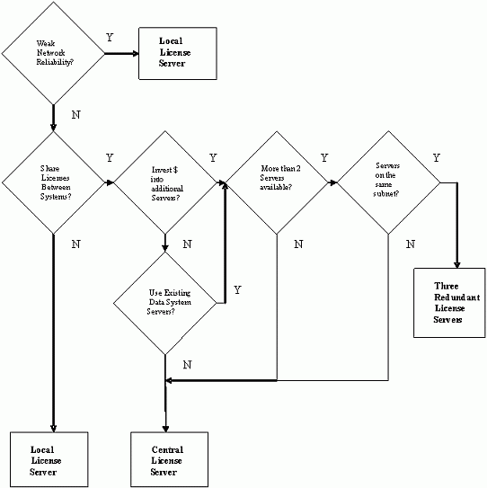
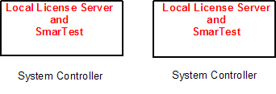
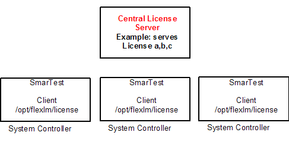
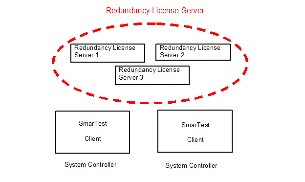

Maximizing Verigy's V93000 Per Pin Tester Optimal FLEXlm License Server Setup
Erika Vasquez, Verigy
Thomas Kubernus, Verigy
Marcus Baumann, Verigy
Paper ID: 104361
Abstract
With the continuous drive to lower cost of test in high volume manufacturing, Verigy's V93000 offers scalable licensing per pin that can significantly reduce costs for customers who have as few as two V93000 testers in one test facility, to customers who have hundreds of V93000 tester systems world wide.
This paper will cover different ways to setup your license server to maximize the benefit of Verigy V93000 licensing per pin.
Introduction
With the continuous drive to lower cost of test in high volume manufacturing, Verigy has developed a way to license hardware and software features down to a per pin level using Macrovision's FLEXlm software. This licensing scheme, allows customers to buy the hardware at a competitive price and to purchase licensed features, such as speed and memory based on what is needed to run their products across all of their test facilities, thus keeping production costs down.
Customers, along with their Advantest support Application Engineers, can come up with a strategy on how they would like to 'serve up' and make available those licensed features. It is recommended that customers look to see if there may already be a group within their company that handles serving up and managing FLEXlm licenses for other software, and see what it would take for them to serve up and manage the V93000 license files.
This paper will outline Verigy's supported server hardware and software, followed by a brief description of the Macrovision FLEXlm software. This paper will focus on describing each of the options for setting up a license server, and recommend a license server setup based on a customer's requirements.
FLEXlm Licensing
FLEXlm licensing is based on a server client principal. The license server has the capability to serve licenses. The term license server is also used to refer to the physical hardware where the license server is running.
There are various ways to serve us licenses:
- Local License Servers
- Central License Servers
- Three Redundant License Server (Triad)
The license client uses licenses provided by the license server. The license client is integrated into the SmarTest software.
FLEXlm Licensing Prerequisites
Network Reliability
Good network connectivity is very important when creating server/client setups. Without a reliable network, clients will have a hard time obtaining necessary licenses to run.
Rough guidelines for a reliable network are:
- Ping time between license server and system controllers (around 300ms or lower)
- Reliable download performance (no connection losses, no interrupts during data transfers)
- Minimum network performance (100Mbits/s)
- High up time for network infrastructure
If you have high network reliability, you can use all supported types of license server setups. If you have low network reliability, we recommend using a local license server setup, to be independent of the network or a central license server in the same subnet as the clients.
Verigy V93000 Supported Hardware for V93000 License Servers:
V93000 Testers are currently delivered with either an HP xw4400 or an xw8400 system controller.
These system controllers can act as local license servers for a tester, but if you want licenses to be shared across multiple V93000 testers, it is recommended that you either set up a central license server or a triad server, on system controllers that are fault tolerant or at least have fail over redundancy and high reliability and not physically driving the V93000 hardware.
Verigy V93000 Supported Software for V93000 License Servers:
License Server (FLEXlm binary revision) and Client (SmarTest) dependencies:
License Servers MUST have FLEXlm software revisions that are equal to or greater than the client FLEXlm revision.
lmutil >= lmgrd >= client versionIf this is not the case, you may see long SmarTest boot up times and you violate the Macrovision User Guidelines.
Supported License Server Operating Systems:
- SunOS 8
- HP-UX 11i (support will be discontinued with SmarTest 6.3.2 and 6.4)
- Red Hat Linux 3 (no specific update)
For best license server stability, it is recommended that SmarTest revision 5.4.3 or greater be used, which has some defect fixes and additional FLEXlm process checks that avoid orphaned licenses after a SmarTest shutdown.
License Server
Server Setup Recommendation

Local License Server
In a local license server configuration (not recommended for more then 2 testers) the license server runs on the Linux Controller together with the SmarTest software.

Local License Server Advantages: 1
- Low risk setup => No Network dependencies; Only one tester is unavailable if server fails
- No additional Computer (License Server) needed
- Simple license management (only for a 2 tester setup)
- Easy to move a tester, with its licenses
Local License Server Disadvantages:
- No license sharing between different Test systems possible
- No Hardware sharing between different Test systems possible = Reconfiguration
- Inflexible solution
SmarTest looks for licenses available in the /opt/flexlm/license directory.
FLEXlm process servers up licenses from the /opt/flexlm/license directory as well.
Because FLEXlm cannot serve up licenses that were NOT redeemed for the local system controller, local license server setups cannot share licenses in this setup.
Central License Server
In a central license server configuration the SmarTest software runs on the Linux Controller. The central license server runs on a dedicated server.

Central License Server Advantages:*
- Easily share licenses between different Test systems
- Flexible solution
- Simple license management (for more than two test systems)
Central License Server Disadvantages:*
- If one of the Central License Server system controller fails, all test systems are affected (can be solved by using Three Redundancy Server setup)
- Additional server hardware needed.
- Moving a tester is only possible at renewal time so that the licenses can also be moved when the new location does not allow access to the old license server.
A central license server system controller does NOT run SmarTest. A benefit to this is that if tester or a tester's system controller is brought down for maintenance, moved to another facility, or simply re-booted by a user, the licenses on the central license server can continue to be used.
* PinScale Licensing and Model File - Verigy User Documentation (E8000-91011)
Three Redundant License Server Configuration (Triad) - RECOMMENDED
In a redundant configuration with three license servers, each of the three license servers runs on its own dedicated system controller and serves the same set of licenses.
To specify a three license server configuration you must include three SERVER lines in the license file during license activation. The set of three SERVER lines must appear identically in the same order, in all three files, on all three servers.
If a license server system detects that it cannot communicate with at least one other server, it refuses to serve up licenses until communication is restored. That is, a minimum of two license servers must be running. This guarantees that only one of the three license servers serves up licenses at any one time.*
Example:
SERVER <license_file_host_name> <hostid> <port> SERVER <license_file_host_name2> <hostid> <port> SERVER <license_file_host_name3> <hostid> <port> VENDOR socbu
* FLEXlm End User Guide - Macrovision Version 10.8
For further details see the FLEXlm Licensing End User Guide.

Triad Server Advantages:*
- All advantages of the central license server setup
- Higher License Server uptime
Triad Server Disadvantages:
- System controllers, that are part of the triad, must be hosted within the same sub-net
- Move of a tester outside the network of the triad, may result in re-hosting of some licenses (NOTE: clients do NOT need to be in the same sub-net, if a system controller can be 'pinged' then it can see and use the licenses on the triad)
- Higher infrastructure costs
* PinScale Licensing and Model File - Verigy User Documentation
License Server Setup Examples
Example 1: Local License Server Setup
Customer A has one V93000 test system on an engineering floor. It has great network reliability, but does not have a need to share license resources with any other V93000 system.
Customer A does not have any system controllers that can be used as a central license server.
A local license server is the best option. The V93000 test system can serve licenses to itself.
To Implement:
Install the FLEXlm server package on the system controller.
Place the redeemed license file in the /opt/flexlm/license directory on the system controller.
Verify that the /etc/init.d/smartest_license script is using the /opt/flexlm/license directory as the desired license directory.
Initialize the FLEXlm server on the system controller: /etc/init.d/smartest_license start
Example 2: Central License Server Setup
Customer B has two V93000 test systems on an engineering floor.
Customer B has a highly reliable server used and managed by and licensing group within the company.
The central license server is a good option, so both systems have access to the licenses and the licensing group is responsible for license management.
To Implement:
The FLEXlm server package will be installed on the designated server.
The /etc/init.d/smartest_license script may need to be modified to point to the desired license directory for the SmarTest licenses.
On the server, to start the FLEXlm license server execute: /etc/init.d/smartest_license start
On each tester, make sure the /opt/flexlm/license directory contains a copy of a license file that specifies which servers to use, and is using the USE_SERVER keyword.
Example:
SERVER <hostname> <mac_address> <port> DAEMON socbu USE_SERVER
Example 3: Three Redundant License Server Setup (Triad)
Company C has a total of 4 manufacturing and engineering lab sites, with a total of 50 V93000 systems. Currently each tester is a local server, serving up its own licenses.
Each time a V93000 tester is purchased, licenses are redeemed for the new asset and only being used on that asset.
It appears that all licenses are not always used on each tester, but data is only currently seen on a per site basis and not always shared with other sites.
Company C wants to be able to better utilize licenses.
- Continue with local license servers.
- One central license server for each site.
- Three-redundant license server setup for each site.
- One central license server setup world wide.
- One three-redundant setup world wide.
The current setup is troublesome every renewal period, because licenses must be updated on each tester.
They also do not share licenses often, and may be buying licenses for a system that may only have a temporary need for a specific feature.
They definitely do not want to keep the current setup because it is not easy to manage.
A central license server appears risky especially for a manufacturing floor that needs a fail-over redundant setup, so a central license server for each site or for a world wide setup is not a good choice.
The choice is either splitting licenses over multiple central license servers, three-redundant server for each site, or one three-redundant server world wide.
They have a reliable network, and have a few servers, on the same sub-net that can be used to host licenses
Customer C decides to set up one three-redundant server that all sites will use. Although using multiple central license servers is an option, it has some risk because if one server goes down, the licenses on that server will not be available if requested until the server is brought back up. The license management team within Customer C will manage monitoring usage of licenses and trigger when new licenses will need to be purchased.
To Implement:
Customer verifies that all V93000 testers can ping the targeted servers.
They decide that in the renewal phase, they will re-host and move all licenses to the three designated servers, creating a three-redundancy server.
Each of the three servers will have a copy of the available license files, so if one server goes down, the other two servers will be backups. Clients will use the keyword USE_SERVER to point to the license servers being used. This will allow them to easily monitor usage on the servers, and it becomes easier to update servers when new licenses are added.
Clients will no longer need to have a copy of the latest license files, which will help reduce license file setups in the future.
In addition all testers will utilize one central pool of licenses, which may reduce the amount of licenses being purchased.
Customer C, for example, may find that they are under-utilizing licenses, and may be able to buy new V93000 testers with fewer or no licenses, thus reducing their capital expenses and thus providing a competitive pricing advantage for Verigy.
Customer C,, in the past, may have purchased more licenses for one of their sites, when they actually had idle licenses at another site.
License File Setup
SmarTest on a client, by default, references the /opt/flexlm/license directory for a list of license files (*.lic) and features.
At start-up, SmarTest reads the V93000 System Model file or the Device License File (SmarTest 5.4 or greater), and resolves the requested capability into required flexlm licenses.
The license files hold the host name of the license server where the license is managed.
SmarTest then contacts the license server to check if the licenses are available. If they are, it checks them out and enables the applicable features.
For the central server and triad server setups, it is recommended that the license files on the client use the USE_SERVER keyword, instead of copying all the license files local onto each client. (SmarTest 5.4.3 or greater)
Example:
SERVER <license_server_host_name> <hostid> <port>
SERVER <license_server_host_name2> <hostid> <port>
SERVER <license_server_host_name3> <hostid> <port>
VENDOR socbu
USE_SERVER
SmarTest will use the license files available on the clients based on the alpha-numeric name of the license file (SmarTest 5.4 or greater).
Renewal of Licenses Every Year
Advantest has implemented a yearly license renewal phase for the V93000 Pin Scale testers. In this phase you have the opportunity to make changes to your license server setup, without any additional cost.
Before this renewal period, it is recommended that you re-examine your license server setup to see if another setup is more appropriate for your use model, or if it is best to leave the setup as is.
Even if your license server setup will not change, licenses will need to be renewed every year.
Working in a FLEXlm License Environment
Restricting Maintenance Tasks for the License Server
With a standard installation of lmgrd, any user anywhere is able to bring down the license server using the lmutil lmdown command and/or "remove" a feature (license) by using the lmutil lmremove command. The lmremove command is a way to manually check a feature back in to the server although it is used (FLEXlm End User Guide - Macrovision Version 10.8).
The lmremove command is not critical for a running SmarTest session because the processes that checks out the licenses form the server will almost immediately check out the licenses again without interruption of the users work.
There is one exception.
When the license is checked back in, another user could check out this license before the old user can check it back out again. In this case the original user of this license is short in licenses, which will cause an interruption if not enough licenses are available. This should be a rare case.
On the other hand when someone is issuing the lmdown command the server will shut down immediately. This has a major impact to any production or engineering floor.
To control who can issue the lmdown and lmremove commands the administrator has the option to choose from several possibilities:7
- Using the lmgrd option -x lmdown and/or -x lmremove
When this option is set the license server will not accept the lmdown/lmremove command from anywhere thus disabling it. The only way to quit the license server is to use the kill command, for example, kill <pid of lic server>
- Using the lmgrd option -local
When set, the lmreread and the lmdown command can only be issued from the same machine from which the license server is running. By limiting access to the server only entitled users can stop or maintain the server.
- Using the lmgrd option -2 -p
When set, using the commands lmdown, lmreread and lmremove can only be used by a certain user group defined in the Unix group "lmadmin". If this group is not defined the "root" user is the only user able to execute those commands.
- Simply not offer the lmutil command on the clients
If there is no lmutil command on a client, no one can execute the commands. The downside to doing this is that there is no way for anyone to check availability of licenses or to remove their own licenses in case they get hung.
License Optimization
There are tools showing license usage and license distribution for a license server, but there is no tool to completely optimize license usage.
Optimization requires knowing everything in advance: how many licenses are needed for all the testers at any given point in time, and for how long they are needed.
If an interrupt or an unplanned need of additional licenses is necessary, a reassessment of license needs would have to be performed.
Due to this complexity and the dynamic need of licenses, most customers seem to prefer having certain license features fixed for certain testers. This is very easy to handle and the flexibility for license usage remains in case reconfigurations is needed.
With the removal of base licenses with SmarTest 5.4, many licenses no longer need to be served by a licenses server (Note this is only true if the whole floor is using 5.4 or higher!). This makes licensing less complex based on the reduction of licensed features being served.
Smartest_license script
When the lmgrd rpm client is installed on the system controller, Advantest provides a lmgrd start-up script which resides in /etc/init.d/
The script is called:
smartest_license
This script is called on system controller boot, or can be called on the command line.
/etc/init.d/smartest_license start; which will start the lmgrd server
Or
/etc/init/d/smartest_license stop; which will stop the lmgrd server
This script defines what license directory that lmgrd will use.
Troubleshooting
Important commands related to license server or client:*
Start license server with the license files located in /opt/flexlm/license and the debug log file defined to be located in /opt/flexlm/log:
/opt/flexlm/bin/lmgrd -c /opt/flexlm/license -l /opt/flexlm/log
Stop license server:
/opt/flexlm/bin/lmutil lmdown -vendor socbu -q
Re-read all license files located in /opt/flexlm/license and make them available for use:
/opt/flexlm/bin/lmutil lmreread -c /opt/flexlm/license
Location of debug log file:
/opt/flexlm/log
Reads out status of license server and lists up the allocated licenses of the different testers:
/opt/flexlm/bin/lmutil lmstat -a
* PinScale Licensing and Model File - Verigy User Documentation (E8000-91011)
Environment Variables
FLEXLM_DIAGNOSTICS = [1/2/3]
Sets the diagnostic mode of the licensing process (lip). It will report detailed messages to the report window.
The variable is set to 1, 2 or 3 where level 3 provides you most information.
For more details see "Pin Scale Licensing and Model File" or Macrovision's "FLEXlm End User Guide".
USE_FLEXLM_LIC_OFFLINE = 1
When this variable is set, SmarTest will also check out licenses when it is in offline mode thus enabling the user to troubleshoot licensing issues on an offline machine. A valid license server with valid licenses has to be available.
REQUESTED_CAPABILITY_MODE = 1
When this variable is set, only the requested licenses are checked out even if you have an emergency license installed (which normally gives you all features no matter what is defined in the model file).
Log files
Start license server with the license files located in /opt/flexlm/license and the debug log file defined to be located in /opt/flexlm/log:
/opt/flexlm/bin/lmgrd -c /opt/flexlm/license -l /opt/flexlm/log
Location of debug log file:
/opt/flexlm/log
Conclusion
In an optimal scenario, V93000 system controllers would act only as clients, with license files set up to use the 'USE_SERVER' keyword. This setup is what requires the least amount of maintenance. In this setup, when license files are added to the server, they simply become available to the client without any change necessary on the tester system controller.
With high volume manufacturing floors, any down time due to a license server issues is not acceptable.
Having a triad server setup, on three separate highly reliable servers, guarantees that licenses served will always be available.
Based on need, licenses can be used by everyone. And if more licenses are needed, more can quickly be purchased.
Having a triad server that serves licenses to testers world wide, is the best way to take advantage of the per pin licensing capabilities of the V93000. This is also a great way to lower cost of test, because full capabilities no longer have to be purchased for each tester but rather are allocated based on the current application running on each tester.
Biographies
Erika Vasquez is a Technical Consultant for Verigy Ltd. She has been on the Freescale Account team in Austin Texas for the past 7 ½ years specializing in manufacturing support. She has previously held positions at Siemens Transportation Systems and Lucent Technologies. She has a BS in Electrical and Electronic Engineering from the California State University in Sacramento.
Thomas Kubernus is a Senior Software Engineer for Verigy Ltd. He worked for HP/Agilent/Verigy for the past 11 years in technical marketing. He holds a diploma in Computer Science.
Marcus Baumann is a Software Engineer for Verigy. He worked for Agilent/Verigy for the past six years in the documentation department and in technical marketing. He holds a diploma in Physics.